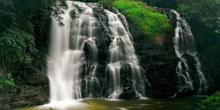
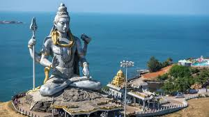

Bengaluru, the capital of Karnataka, is known as the “Silicon Valley of India”
with Lalbagh Garden, Cubbon Park, Vidhana Soudha, and a vibrant IT culture.
⏰ Best Time: October – February
💰 Budget: ₹6,000 – ₹12,000 (3–4 days)
👨💼 Guide: Not mandatory
🌤️ Weather: Pleasant, 15°C – 28°C
📍 Location: Karnataka, India
Mysuru
Mysuru is famous for Mysore Palace, Chamundi Hills, Brindavan Gardens,
and the world-famous Mysore Dasara festival.
⏰ Best Time: September – March
💰 Budget: ₹4,000 – ₹7,000 (2–3 days)
👨💼 Guide: Available near palace
🌤️ Weather: Cool, 16°C – 30°C
📍 Location: Karnataka, India
Hampi
Hampi, a UNESCO World Heritage Site, is known for its ancient temples,
stone chariots, and the ruins of the Vijayanagara Empire.
⏰ Best Time: October – February
💰 Budget: ₹5,000 – ₹8,000 (2–3 days)
👨💼 Guide: Essential for temple ruins
🌤️ Weather: Warm, 18°C – 32°C
📍 Location: Bellary District, Karnataka
Coorg

Coorg, also called the Scotland of India, is famous for coffee plantations, Abbey Falls,
Dubare Elephant Camp, and misty hills.
⏰ Best Time: October – April
💰 Budget: ₹5,000 – ₹9,000 (3 days)
👨💼 Guide: Not needed
🌤️ Weather: Pleasant, 15°C – 25°C
📍 Location: Kodagu District, Karnataka
Gokarna

Gokarna is a famous beach destination in Karnataka, known for Om Beach, Kudle Beach,
and the Mahabaleshwar Temple.